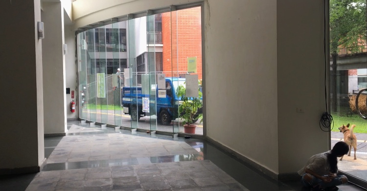
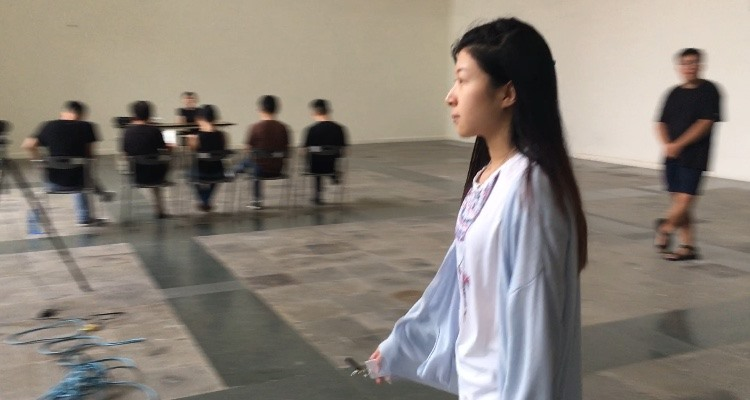
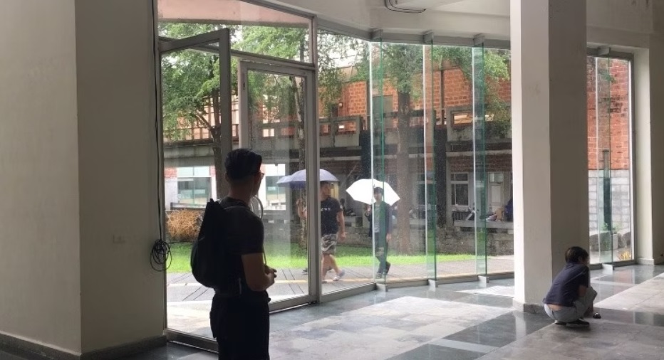
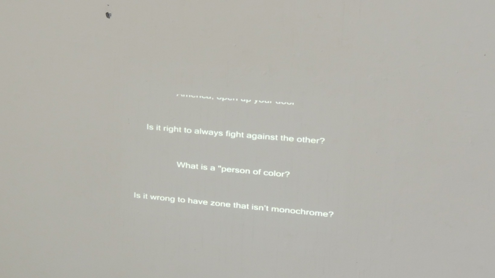

大廳
《大廳》(2019)是一個發生於開放空間中的臨時性事件。作品透過安排多組接近日常行為的片段，使其在觀者周圍重複出現，並模糊表演與現實之間的界線。
一樓大廳空曠且挑高，視線被牆面、柱體與曲面玻璃窗分割。相較於厚實的牆面，通透的玻璃更為顯眼，使室內與外部景觀相互滲透。窗外可以看見不見頭尾的彎道、草皮和鄰邊的建築。人在其中多半處於移動與過渡的狀態，停留往往是短暫且偶發的。
我在大廳安排數組表演者，給予他們接近日常的行為指令，並不標示何者為演出。這些片段在觀者周圍反覆出現：
一輛從彎道駛入的藍色卡車；
一位長髮女性三度經過；
背著貓咪圖案托特包的女子從二樓走過；
草地上遛狗的人；
撐傘在窗外停留的遊客；
室內偶然響起的手機聲。
當藍色卡車再次出現並倒車離開時，現場播放 Unknown Mortal Orchestra 的〈Puzzles〉。前奏由車流與玻璃破裂聲構成，政治性的歌詞如同片尾字幕般投影於牆面，聲音與文字暫時構成一種敘事的框架。在這樣的狀態中，觀看不再指向一個明確的對象，而是分散於多個同時發生的片段之中，讓日常變得不可靠。所有時間內在界限上擺盪，等著被接收的可能的碎片狀的事物，指涉外部的同時，也試著對發生的當下提問。